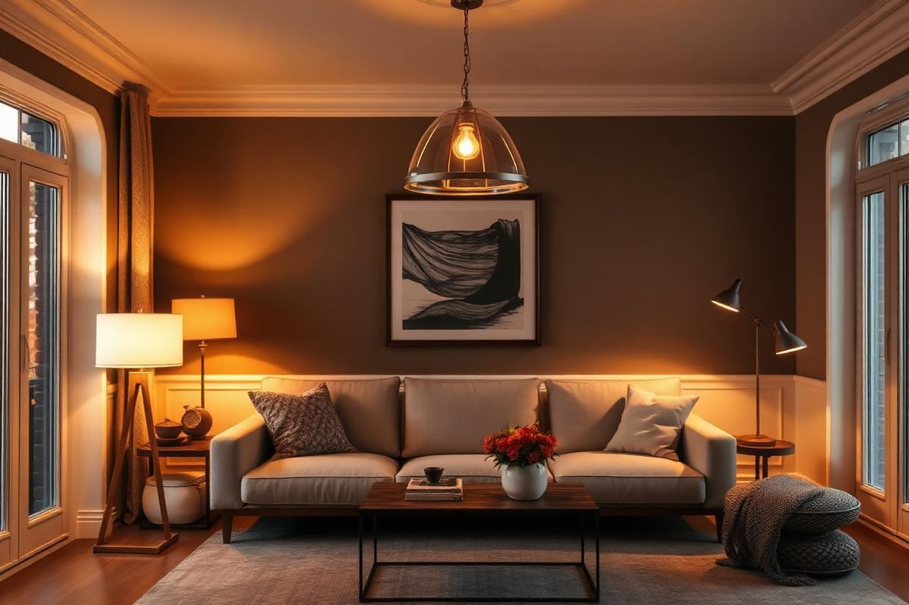
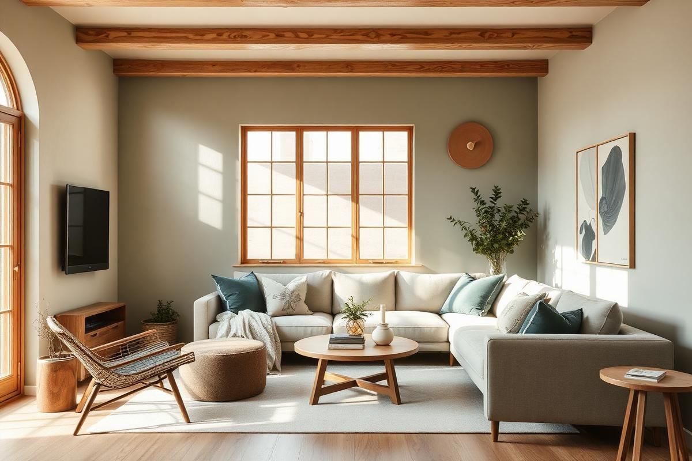
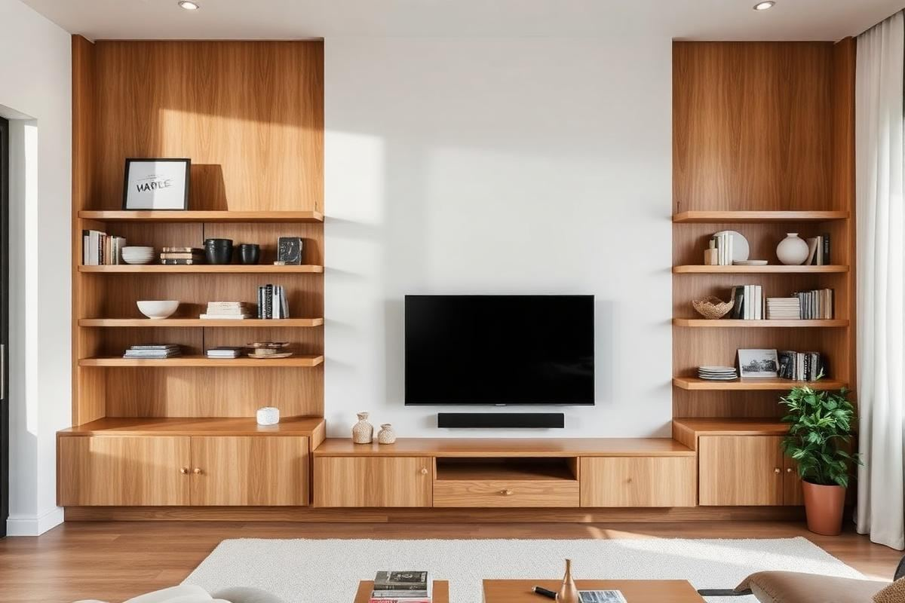
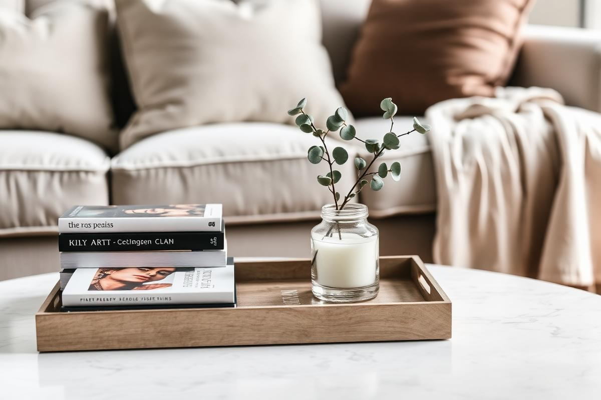

Living Room
Small Living Room Layout Ideas That Actually Work
The right layout can make a 12x12 living room feel generous. Here is the exact process a stylist uses to plan one, from focal point to rug size.
8 min read
Layout, sofas, rugs, lighting, and styling ideas to build a living room that looks great and works for everyday life.
The right layout can make a 12x12 living room feel generous. Here is the exact process a stylist uses to plan one, from focal point to rug size.

A good sofa lasts fifteen years. Here is how to make sure the one you buy is one of them.

A too-small rug is the most common decorating mistake. Here is how to size a rug for any living room layout.

Living Room Lighting Ideas: Layers That Feel Right — a clear, editor-tested guide covering the essentials without the filler.
How to Arrange Throw Pillows on a Sofa Without Overdoing It — a clear, editor-tested guide covering the essentials without the filler.

Living Room Color Schemes That Age Well — a clear, editor-tested guide covering the essentials without the filler.

A television does not have to dominate a room. Here are the mounting heights, wall treatments, and styling tricks I use to make a TV wall look like part of the design.

Coffee table styling is not decoration for its own sake — it is composition. Here is the formula, the measurements, and the everyday version that survives real life.